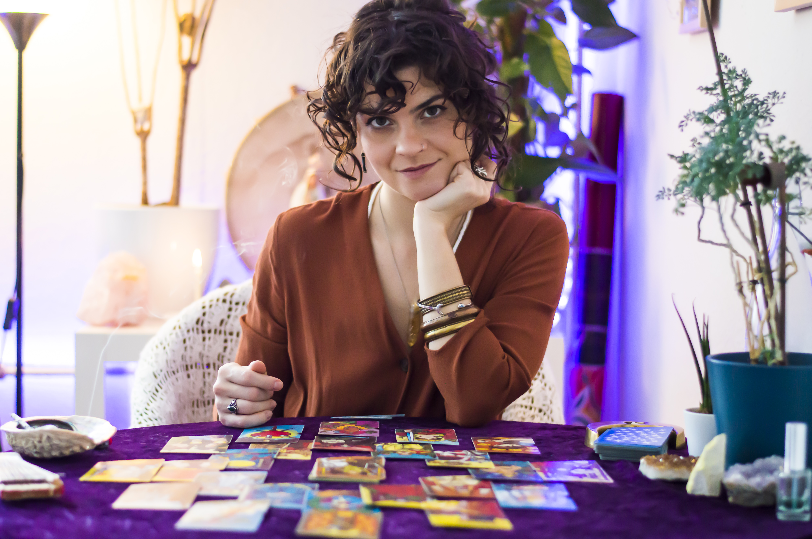

Reclaim your power
Trust your intuition and unleash your potency.
Most of us are born with intuitive skills but nobody teaches us how to own them. In fact, as we learn to grow submissive, docile and fearful, we are taught by a patriachal system to repress our innate powers.
If you are looking to connect to your intuition with confidence even though you know nothing about spirituality...
If you're seeking to improve the quality of your relationships without losing yourself in the process...
If you want to manifest your growth without depending on fake gurus or partners...
This course is for you! üñ§
My Tarot reading has a therapeutic approach with sparkles of divination. That means, I honour you as the protagonist of your life, with agency on your destiny and I refuse to place you as a mere object of it. Tarot has no power to change your life if you don't take the steps to make the necessary adjustments. But it has the power to show us the ways to a prosper life!
This course is designed to give you solid basis for you to build your Tarot practice on. I'll give you all you need to read for yourself and for others.
Experience with Tarot is welcome, but not required!
Hi, I am Paulina!
I am a professional Tarot reader for 10 years and in the last 3 years I have taught 7 classes of THE UNIVERSE OF THE TAROT. I am a practitioner of contemporary alternative therapies, a capacitor of psychic development and Apometry and priestess of traditional practices.
My work is entirely devoted to increasing women's awareness of their personal potency and enabling healing by promoting their connection to the divine.
My mission is to hold space and capacitate women to ground in their self-empowerment and hone in their sense of self-direction, firmly secure by a spiritual backing and truth.
NEVER DOUBT YOURSELF AGAIN.
Imagine having access to all hidden information of any situation, to make solid decisions in favour of your best interest, growth and evolution.
COURSE PROGRAM
This course will give you trustworthy guidelines about how to maintain a safe, firm and loving practice. We will exchange about human nature and experience from a spiritualist perspective, many relevant aspects of spirituality and how this can be related to Tarot, and the idea of being at service of the divine with responsibility.
-
MODULE 1 ~ A COSMIC LANGUAGE
- - Spiritual fundamentals: how does the oracular activity work?
- - The Fool's journey: the human evolution path through the archetypes
- - Destiny vs. Future
- - Historical context
-
MODULE 2 ~ THE SOUL'S JOURNEY
- - Tarot fundamentals I: complete content on Archetypes
- - From The Fool to The World in three stages of consciousness
-
MODULE 3 ~ MUNDANE PORTALS
- - Tarot fundamentals II: complete content on Minor Arcana
- - The 4 Suits and the 4 Elements
- - The Court cards
- - The Numbered cards
-
MODULE 4 ~ FOUNDATION VALUES
- - How to ask the right questions to transform your current reality
- - Powerhouse: maintain a trustworthy relationship with your clients and a safe environment for you and them
- - Effectively protect and cleanse your energy before and after readings
- - The therapeutic approach and Divination
-
MODULE 5 ~ PRACTICE
- - Selected methods and spreads
- - Self-source: interpret without having to peek on the Internet
- - What to do next after a reading: digesting, processing and walking the path
YOU WILL GET
- - Over 20 hours of video classes
- - Extensive, detailed, precious handout with the entire content of the course - all you need to carry on with your practice afterwards and yours to consult forever!
- - MANA Tarot Journal for your own Tarot codes to grow with you
- - Telegram group with former students, a community of dedicated Tarot learners like you
- - One year of access to the course in a digital platform
PLUS A MYRIAD OF BONUSES!
-
- 7 incredible
BONUS classes!
- • Chakra reading;
- • Astrological Correspondences;
- • Reversed Cards;
- • The Moondala;
- • Handling your deck;
- • Field Protection;
- • Making your altar.
- - MANA Root&Crown Workbook for your rites of passage
- - Access to my audio guided meditations, prayers and decrees
What are they saying about me?
Sth very nice
So, with over €300 euros worth of bonuses, the extensive provided material, the one year access to the course and a life-time community to consult online at anytime, you are able to make this course now
from €733 worth of content
for €297 ONLY!
*You will be redirected to the payment page.
Please note that prices are subjected to adjustments.
THIS COURSE IS FOR YOU IF:
- You are serious about developing and deepening spiritual practice and divination skills
- You want instructed and grounded help to amplify your intuitive faculties
- You're looking to proactively heal, empower and find solutions to align you with success, happiness and ease in your life
- You're eager to have your spirituality be a leading point of guidance in your life
- You're ready to empower yourself and take charge of your own life instead of waiting for someone's permission or a sign
- You're inclined towards the mindset of self empowerment
- You're driven to do the work in favour of your evolution
- You want to re-enchant the world
- You're sick of a purely material and reason-driven world
THIS COURSE IS NOT FOR YOU IF:
- You find it hard to commit or don't prioritise your spiritual practice and self-care
- You're not really looking to honour or trust your intuition, you just want quick definitions
- You're not questioning the current patriarchal systems of governance
- You want to take the long way through trial and error to figure out everything for yourself
- You don't feel called to Tarot divination
- You think spiritual work must be charity
- You enjoy cosmovisions that spread authority through fear and disempowerment of the population
- You're not willing to change perspectives about how you see yourself
- You think intuition is a given and you don't want to practice to reach mastery
- You don't critically perceive your atheism as an effect of deep colonial/imperialist trauma
I honour your mental health. Take the course when you're ready. I encourage you to and trust that you honour your desire.
This course can be purchased at any time and it will be available to you for an entire year. No anxiety, no mental triggers. We are literally sick of this.
I have created MANA Centre for Awareness Development because I believe consciousness should come from multiple and complimentary directions, yet serving a common purpose: our personal and collective evolution.
MANA is a space for personal improvement through alternative therapies, healing practices and communal experiences. I help you grasp the root of your matters to open your life roads, developing your personal potency in favour of your well-being and growth.
FAQ
Frequently Asked Questions
-
I know nothing about Tarot, is this course for me?
I will teach you all you need to know and more!
-
I have some practice with the Tarot, is this course
for me?
Yes, if you want to acquire more confidence and have a more solid basis in your practice, both theoretical and practical.
-
Will I have access to you during the course?
I will give you support in the comment section of the platform.
-
Will I be able to make money with Tarot?
Yes, if you are committed with the practice during and after the course, with the necessary time for you to build your confidence and for your skills to be grounded.
-
Do I have to buy it now?
Only if you want to receive over 300 euros worth of bonuses and enjoy the pre-sale price.
-
I want supervised practice with you. Will this
course contemplate that?
This course is your preparation for my method. Once you do it, I will offer you very friendly conditions to join The Oracle's Oracle mentorship.
*You will be redirected to the payment page.
This product does not guarantee the obtention of results. Any references to the performance of a strategy should not be interpreted as a guarantee of results.
UNLEASH YOUR POTENCY.
Your life only changes when you change.